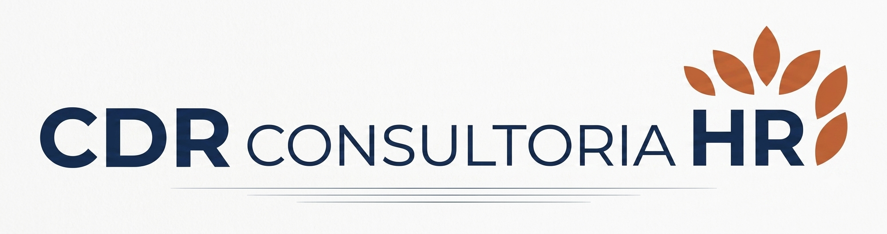
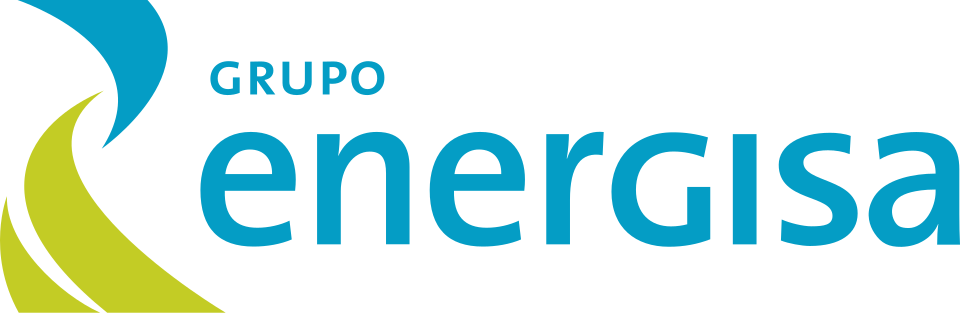
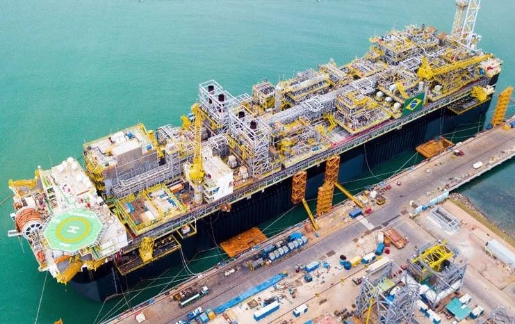
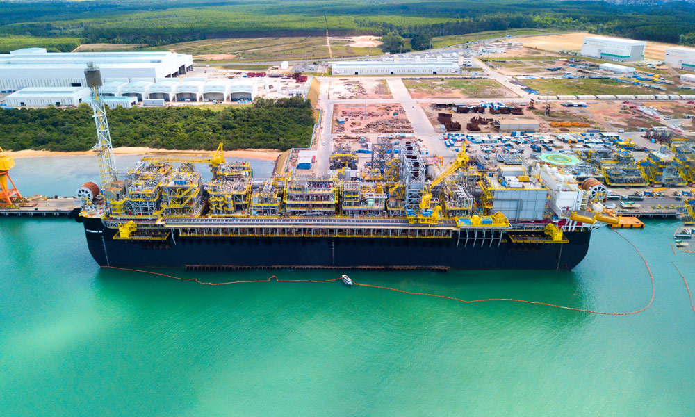
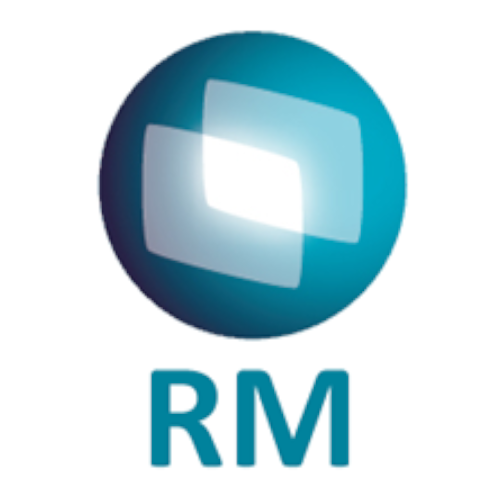

Francisco Strauch.
Project Management & PMO Professional.
Project professional with hands-on experience across the full project lifecycle — from field operations and project execution to PMO governance, portfolio management, and executive reporting. Throughout my career, I have supported complex initiatives in operational and corporate environments, working closely with project teams, business areas, leadership, and external partners. My experience includes coordinating project activities, improving business processes, supporting change adoption, training end users after implementations, and establishing governance practices that improve visibility and decision-making.
Work Experience

Project and Systems Consultant
- Led the implementation of ERP TOTVS RM, Fluig, Simpax, Movidesk, and other systems, coordinating configuration and rollout across departments.
- Monitored and suggested improvements to project management practices, applying Agile and Kanban methodologies to manage tasks and workflows.
- Delivered user training sessions across multiple departments, ensuring smooth adoption of newly implemented systems and tools.
- Built Power BI dashboards with key indicators to track, using advanced Excel functions for data analysis and reporting.

- Managed PMO reporting and governance for a Research & Development portfolio of projects.
- Led project review meetings with management covering progress, risks, budget performance, and corrective actions.
- Monitored project budgets, tracked expenses, and flagged cost variances to keep projects aligned with financial targets.
- Built dashboards, presentations, and project documentation to communicate status, financial performance, and key metrics.
Project Specialist — Shared Services Governance
- Led Shared Services Center department and project portfolio governance, overseeing projects, reporting, risk management, and stakeholder communication.
- Implemented and improved processes across Shared Services Center departments.
- Conducted needs assessments and feasibility analyses, built project plans, and defined metrics for ongoing monitoring.
- Monitored the progress of strategic projects and processes, escalating risks as needed.
Senior Payroll Analyst — Outsourcing Team Lead
- Led a payroll outsourcing service team, managing a portfolio of 30 clients across offshore, public sector, and oil & gas segments.
- Drove process improvement using Kaizen principles, maintaining a zero-error quality policy and up-to-date internal controls.
- Served as the primary point of contact for internal and external stakeholders, resolving inquiries and supporting decision-making.
Projects

.jpg)
.jpg)

.jpg)
Offshore Production Vessel (FPSO MV14) – Field Project Support
Provided on-site project support during the operational response to the FPSO MV14 after structural hull cracks were identified, requiring mitigation measures prior to the vessel's permanent demobilization.
Based in the field, worked closely with operations, engineering teams, contractors, and vendors to coordinate project activities, monitor schedules and action plans, and support the implementation of environmental risk mitigation initiatives.
Executive Dashboards & KPI Monitoring
Designed and maintained interactive Power BI executive dashboards to provide real-time visibility into project portfolio performance, KPIs, budgets, schedules, risks, and strategic initiatives. Transformed complex project data into actionable insights, enabling leadership to make informed decisions, improve governance, and strengthen communication across PMO, executives, and key stakeholders.

ERP Back Office, HR & Payroll Migration (TOTVS)
Supported the end-to-end migration of Back Office, Human Resources, and Payroll systems to the TOTVS ERP platform across five companies, covering approximately 800 employees in three different cities.
Worked as part of the core project team, coordinating daily project activities, tracking progress, managing risks and implementation challenges, and facilitating communication between business areas, vendors, management, and key stakeholders.
Other Projects & Initiatives
Other initiatives and projects that I participated in and supported.
Invoice Issuance Workflow Automation
Designed and implemented an automated invoice issuance workflow within the Protheus ERP, introducing technical and managerial approval layers to improve governance and efficiency. The project included mapping the existing process, documenting workflows, and delivering a software-based automation solution.
Back-Office Process Mapping & Continuous Improvement
Mapped and analyzed 82 critical back-office processes to identify optimization opportunities, streamline workflows, and support task automation. The project focused on improving operational efficiency through process standardization, workflow documentation in MS Visio, and ERP integration.
Web-Based Demand Management System Implementation
Evaluation and selection of a web-based demand management platform to support back-office operations. The project included requirements gathering, market research, RFI/RFP processes, vendor evaluation, and solution recommendation to ensure alignment with business and operational needs.
Commercial Service Route Optimizer
Based on the construction and use of an MVP in the process of dispatching teams to handle commercial service orders, the aim is to validate whether the routes defined by the product were the optimal routes.
Intelligence in Materials Cost Management
Develop an Advanced Analytics algorithm to predict material price behavior using time series data from correlated commodities, economic indices, and other external data.
AI for Grid Inspections
Standardized image capture using drones and AI to identify anomalies, acting as a filter to select images with a high potential for containing anomalies and forwarding them for verification by analysts.
Efficiency in cleaning photovoltaic panels
Proof of concept for cleaning robots for solar panels, with low water consumption, and to measure the improvement in energy generation performance and the reduction in operational costs of the cleaning process in Solar O&M contracts.
Pantanal wildfires
Proof of Concept (PoC) for the implementation of an IaaS solution (Hardware + Software) dedicated to automated fire outbreak identification, empowering Energisa to transition toward predictive and proactive risk mitigation.
Disconnection of electrical substations caused by birds.
Reduce the number of disconnection in distribution substations due to accidental bird contact with energized parts. Test a digital/electronic solution capable of reducing/mitigating trips in substations caused by birds.
Get In Touch
I'm currently looking for new opportunities in Project Management field. Whether you have a question or just want to say hi, my inbox is always open!
Say Hello